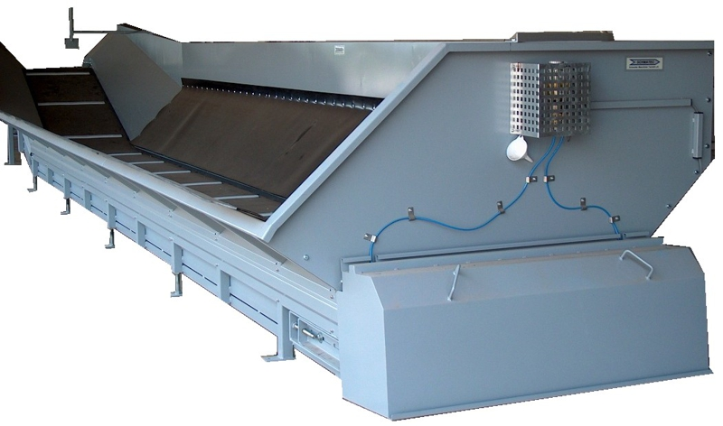
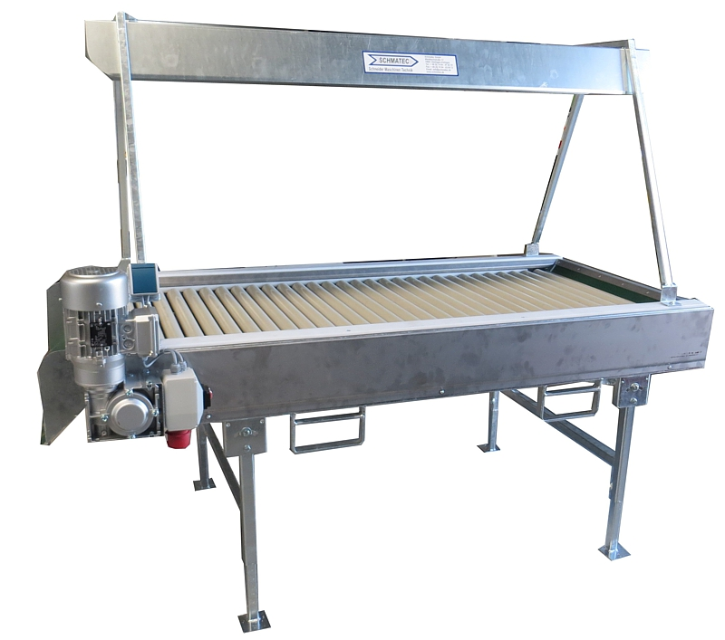

Annahme
Annahme- und Bunkeranlagen
Schonende Aufnahme direkt vom Anhänger oder Container. Modular erweiterbar, mit integrierter Vorabsiebung gegen Erde, Steine und Kraut.
- Aufnahmekapazität bis 60 t/h
- Schonende Aufgabehöhen (verstellbar)
- Vorabsiebung & Steinausschleuser optional
- Stahl pulverbeschichtet oder V2A-Edelstahl

Förderung
Förder- und Steigbänder
Höhendifferenzen, enge Hallen, sensible Produkte — wir konstruieren den passenden Förderer. Bandbreiten von 400 bis 1 600 mm, alle gängigen Bandbeläge, Reinigungszugang an jedem Punkt.
- Bandförderer, Steigbänder, Schwenkbänder
- Steigwinkel bis 60° (mit Mitnehmern)
- Frequenzgeregelte Antriebe
- Hygienischer Reinigungszugang an jedem Punkt

Sortierung
Verlese- und Sortiertische
Manuelle Nachsortierung bleibt das Maß der Dinge bei Premium-Qualität. Unsere Tische sind ergonomisch durchdacht — höhenverstellbar, beleuchtet, mit Ausschleuse-Kanälen für jede Hand.
- 2 bis 16 Arbeitsplätze pro Tisch
- LED-Tageslicht, blendfrei
- Ergonomische Höhenverstellung
- Hygienisches Edelstahldesign